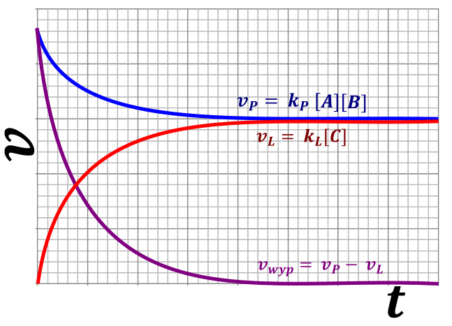

Szybkość reakcji odwracalnych.
Dla reakcji odwracalnej:
\[A + 2B \leftarrow \frac{k_{p}}{k_{L}} \rightarrow 3C\]
Możemy zdefiniować szybkość reakcji w prawo i w lewo, przy założeniu, że rzędy reakcji są współczynnikami stechiometrycznymi:
\[v_{prawo} = k_{P}\lbrack A\rbrack\lbrack B\rbrack^{2}\]
\[v_{lewo} = k_{L}\lbrack C\rbrack^{3}\]
Szybkość wypadkową reakcji możemy zdefiniować, jako różnicę szybkość tworzenia produktów szybkość zaniku produktów, a więc w praktyce szybkość reakcji w prawo odjąć szybkość reakcji w lewo
\[v_{wypadkowa} = v_{P} - v_{L}\]
W stanie równowagi reakcja zachodzi w obie strony, ale makroskopowo nie obserwujemy zmian stężeń, a więc szybkość reakcji w prawo musi być równa szybkości reakcji w lewo. Oczywiście w stanie równowagi stężenia muszą być równowagowe, co można zapisać, jako:
\[v_{P}^{r} = k_{p}\left\lbrack A_{r} \right\rbrack\left\lbrack B_{r} \right\rbrack^{2}\]
\[v_{L}^{r} = k_{L}\left\lbrack C_{r} \right\rbrack^{3}\]
W stanie równowagi szybkości w obie strony muszą być sobie równe:
\[v_{P}^{r} = v_{L}^{r}\]
\[k_{p}\left\lbrack A_{r} \right\rbrack\left\lbrack B_{r} \right\rbrack^{2} = k_{L}\left\lbrack C_{r} \right\rbrack^{3}\]
Co po przekształceniach otrzymujemy:
\[\frac{\left\lbrack C_{r} \right\rbrack^{3}}{\left\lbrack A_{r} \right\rbrack\left\lbrack B_{r} \right\rbrack^{2}} = \frac{k_{P}}{k_{L}}\]
Jednocześnie uzyskany stosunek stężeń jest wartością stałej \(K\) , co możemy zapisać jako:
\[\frac{\left\lbrack C_{r} \right\rbrack^{3}}{\left\lbrack A_{r} \right\rbrack\left\lbrack B_{r} \right\rbrack^{2}} = K\]
Przyrównując te wartości do siebie dostajemy:
\[\frac{k_{P}}{k_{L}} = K\]
Przedstawione zależności mogę przedstawić na wykresach:

Jednocześnie znając mechanizm reakcji (czyli przebieg reakcji etap po etapie) mogę powiedzieć, że szybkość reakcji zależy od tzw. etapu limitującego czyli w praktyce najwolniejszego etapu (tam się reakcja korkuje). Etap ten charakteryzuje się najwyższą energią aktywacji, a więc cząsteczki muszą zderzyć się z największa prędkością, aby zderzenia było efektywne czyli skutkowało reakcją.
Reakcji elementarnr inaczej zwanych reakcjami prostymi są to reakcje, które możemy powiedzieć, że są prostymi zderzeniami się cząsteczek. Reakcje takie stanowią etapy mechanizmu reakcji, każdą reakcję złożoną możemy opisać jako sumę wielu reakcji prostych. Rząd takiej reakcji prostej względem substratu zależy tylko i wyłącznie od współczynników stechiometrycznych w tej reakcji. ALE DOTYCZY TO TYLKO REAKCJI PROSTYCH. NIE MOŻEMY TEGO ODNOSIĆ DO REAKCJI ZŁOŻONYCH, inaczej nie możemy zakładać, że reakcja jest reakcją prostą, jeżeli nie mamy zapisanego tego w treści zadania.